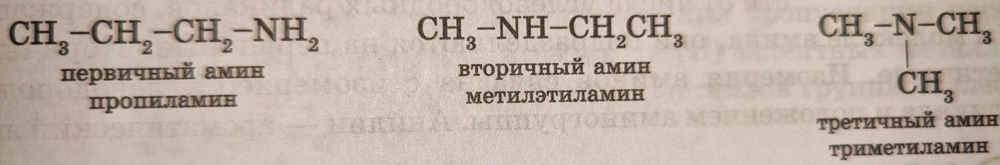

Амины
Классификация аминов
Аминами называют производные аммиака, в молекулах которого один или несколько атомов водорода (H) замещены углеводородными радикалами. Амины, являясь производными аммиака (NH3), имеют сходное с ним строение и проявляют подобные ему свойства.
Как в аммиаке (NH3), так и в аминах атом азота (N) имеет неподеленную пару электронов, поэтому они могут быть донорами.
В зависимости от числа углеводородных радикалов, содержащихся в молекуле амина, они подразделяются на:
- Первичные: R-NH2
- Вторичные: R1-NH-R2
- Третичные: R1-N(R3)-R2
Заместители могут быть как одинаковыми, так и разными.
Можно также считать, что первичные амины являются производными углеводородов, в молекулах которых атом водорода (H) замещен на функциональную группу NH2 – аминогруппу. В зависимости от природы радикала амины могут быть предельными, непредельными и ароматическими. Например, C6H5-NH2 – фениламин или анилин.
Номенклатура и изомерия
Названия аминов производят от названий соответствующих углеводородных радикалов с добавлением окончания -амин.
Примеры:
Характерные структурные изомеры аминов:
а) Изомерия углеродного скелета
б) Изомерия положения функциональной группы
Анилин (C6H5NH2)
Анилин (фениламин) — представитель ароматических аминов, в молекулах которых аминогруппа непосредственно связана с бензольным кольцом.
Строение молекулы анилина можно изобразить несколькими способами:
Первичные, вторичные и третичные амины, содержащие одинаковое число атомов углерода, изомерны между собой:
Применение аминов
Метиламин (CH3NH2)
Метиламин (CH3NH2) используют в качестве полупродукта при синтезе лекарственных препаратов и красителей.
Диметиламин ((CH3)2NH)
Диметиламин ((CH3)2NH) применяется для вулканизации каучука и в качестве полупродукта в синтезе различных лекарственных препаратов.
Анилин (C6H5NH2)
Анилин — один из наиболее широко применяемых в технике полупродуктов. В основном применяется в качестве полупродукта в производстве красителей, взрывчатых веществ и лекарственных средств (сульфаниламидные препараты).
Предельные углеводороды. Алканы
Описание
1. Предельные углеводороды - это органические соединения, молекулы которых состоят только из атомов углерода и водорода, соединенных между собой простыми (одинарными) связями.
2. Алканы - это самый простой класс предельных углеводородов. Их молекулы представляют собой цепочки атомов углерода, к которым присоединены атомы водорода. Поскольку в алканах все связи между атомами углерода одинарные, то есть предельные, то и сами углеводороды называются предельными.
3. Парафины - это другое название алканов. Оно происходит от латинских слов "parum" - мало и "affinis" - сродство. Это название отражает химическую инертность алканов, то есть их малую склонность к химическим реакциям.
4. Алканы в нашей жизни окружают нас повсюду. Это основная составляющая природного газа (метан), бензина, керосина, парафина для свечей. Также алканы входят в состав нефти и природного газа.
5. Тип соединения в алканах: В алканах все связи между атомами углерода и водорода являются ковалентными неполярными. Это означает, что электронная плотность в этих связях распределена равномерно, что и обуславливает их химическую инертность.
Таблица представителей алканов
| Название | Формула | Температура кипения (°C) | Температура плавления (°C) |
|---|---|---|---|
| Метан | CH₄ | -162 | -183 |
| Этан | C₂H₆ | -88 | -183 |
| Пропан | C₃H₈ | -42 | -189 |
| Бутан | C₄H₁₀ | -1 | -138 |
| Пентан | C₅H₁₂ | 36 | -130 |
| Гексан | C₆H₁₄ | 69 | -95 |
| Гептан | C₇H₁₆ | 98 | -91 |
| Октан | C₈H₁₈ | 126 | -57 |
| Нонан | C₉H₂₀ | 151 | -54 |
| Декан | C₁₀H₂₂ | 174 | -30 |
Гомологи и гомологический ряд
7. Гомологи - это вещества, имеющие одинаковое строение, но различающиеся по числу одинаковых групп атомов. В случае алканов гомологи отличаются друг от друга на одну группу -CH₂-.
8. Гомологический ряд - это ряд органических соединений, в котором каждое последующее соединение отличается от предыдущего на одну гомологическую разность. Алканы образуют гомологический ряд с общей формулой CₙH₂ₙ₊₂.
Интересные факты об алканах
9. Интересные факты об алканах:
- Метан является основным компонентом природного газа и используется в качестве топлива.
- Бутан используется в зажигалках и газовых баллончиках.
- Пропан используется в газовых баллонах для приготовления пищи.
- Алканы с большим числом атомов углерода являются основными компонентами нефти и используются для получения бензина, дизельного топлива и других нефтепродуктов.
10. Постарайся представить себе молекулы алканов как цепочки бусинок. Каждый атом углерода - это бусинка, а связи между ними - ниточки. Чем длиннее цепочка, тем выше температура кипения вещества.
Аминокислоты
1. Что такое аминокислоты? Определение.
Аминокислоты — это органические соединения, содержащие аминогруппу (-NH₂) и карбоксильную группу (-COOH), которые являются строительными блоками белков. Они участвуют в биологических процессах, таких как метаболизм, синтез белков и ферментов.
2. Строение аминокислот
Аминокислоты состоят из следующих частей:
- Аминогруппа (-NH₂): Основная функциональная группа, обладающая основными свойствами.
- Карбоксильная группа (-COOH): Кислотная группа, которая придаёт аминокислоте её кислотные свойства.
- Радикал (R-группа): Уникальная боковая цепь, определяющая свойства конкретной аминокислоты.
- Водородный атом (H): Присоединён к центральному углероду.
- Центральный углерод (Cα): Углерод, к которому присоединены все остальные группы.
3. Первые 8 представителей аминокислот с формулами и названиями
| № | Название | Химическая формула |
|---|---|---|
| 1 | Глицин | H₂N-CH₂-COOH |
| 2 | Аланин | H₂N-CH(CH₃)-COOH |
| 3 | Валин | H₂N-CH(CH(CH₃)₂)-COOH |
| 4 | Лейцин | H₂N-CH(CH₂CH(CH₃)₂)-COOH |
| 5 | Изолейцин | H₂N-CH(CH(CH₃)CH₂CH₃)-COOH |
| 6 | Серин | H₂N-CH(CH₂OH)-COOH |
| 7 | Треонин | H₂N-CH(CH(OH)CH₃)-COOH |
| 8 | Фенилаланин | H₂N-CH(CH₂-C₆H₅)-COOH |

4. Классификация аминокислот
Аминокислоты классифицируют по следующим признакам:
- (1) По полярности и заряду R-групп:
- Неполярные (гидрофобные): глицин, аланин.
- Полярные (гидрофильные): серин, треонин.
- Заряженные:
- Кислотные: аспарагиновая, глутаминовая кислоты.
- Основные: лизин, аргинин.
- (2) По заменимости в организме:
- Незаменимые (должны поступать с пищей): лейцин, валин.
- Заменимые (синтезируются организмом): аланин, серин.
- (3) По структуре радикала (R-группы):
- Алифатические: глицин, аланин.
- Ароматические: фенилаланин.
- С гидроксильной группой: серин, треонин.
- С тиольной группой: цистеин.
5. Подразделения аминокислот (α, β, γ, δ, ε)
Обозначение связано с положением аминогруппы относительно карбоксильной:
- α-аминокислоты: Аминогруппа соединена с α-углеродом (например, аланин).
- β-аминокислоты: Аминогруппа присоединена к β-углероду (например, β-аланин, NH₂-CH₂-CH₂-COOH).
- γ-аминокислоты: Аминогруппа присоединена к γ-углероду (например, γ-аминомасляная кислота, NH₂-CH₂-CH₂-CH₂-COOH).
- δ- и ε-аминокислоты: Аминогруппа находится ещё дальше (например, лизин, где аминогруппа присоединена к ε-углероду).
6. Приставка у аминокислот по систематической номенклатуре
По правилам ИЮПАК приставка "амино-" указывает на наличие аминогруппы.
Пример: 2-аминопропановая кислота — систематическое название аланина.
7. Изомерия аминокислот
7.1. Определение изомерии
Изомерия — это явление, при котором соединения имеют одинаковую молекулярную формулу, но разное строение или пространственное расположение атомов.
7.2. Изомерия углеродного скелета
Пример: Лейцин и изолейцин (оба имеют формулу C₆H₁₃NO₂).
Разница в расположении углеродной цепи в R-группе.
Общее понятие: Изомеры отличаются разветвлением углеродного скелета, не меняя состава.
7.3. Изомерия положения функциональных групп
Пример: α-аланин (NH₂-CH(CH₃)-COOH) и β-аланин (NH₂-CH₂-CH₂-COOH).
Общее понятие: Функциональные группы находятся в разных положениях относительно главной цепи.
7.4. Оптическая изомерия
Пример: L-аланин и D-аланин.
L-изомеры встречаются в природе, а D-изомеры — редко.
Общее понятие: Различие в расположении атомов в пространстве вокруг хирального углерода, что приводит к существованию двух зеркальных изомеров.
8. Классификация аминокислот по способности синтезироваться в организме
8.1. Незаменимые аминокислоты (8):
Аминокислоты, которые не могут синтезироваться в организме и должны поступать с пищей.
- Лейцин (Leu)
- Изолейцин (Ile)
- Валин (Val)
- Лизин (Lys)
- Фенилаланин (Phe)
- Треонин (Thr)
- Триптофан (Trp)
- Метионин (Met)
8.2. Заменимые аминокислоты (10):
Организм способен синтезировать их самостоятельно.
- Аланин (Ala)
- Аспарагин (Asn)
- Аспарагиновая кислота (Asp)
- Глутаминовая кислота (Glu)
- Глутамин (Gln)
- Серин (Ser)
- Цистеин (Cys)
- Пролин (Pro)
- Глицин (Gly)
- Тирозин (Tyr)
8.3. Условно заменимые аминокислоты (2):
Организм может синтезировать их, но в определённых условиях (например, стресс, детский возраст) их синтез может быть ограничен.
- Гистидин (His)
- Аргинин (Arg)
9. Реакция получения аминокислот
Пример синтеза глицина:
ClCH₂-COOH + 2NH₃ → H₂NCH₂COOH + NH₄Cl
Где:
- ClCH₂-COOH — хлоруксусная кислота.
- H₂NCH₂COOH — глицин.
- NH₄Cl — хлорид аммония.
10. Физические свойства аминокислот
Кристаллические вещества: Белого цвета, часто имеют сладковатый вкус.
Растворимость: Хорошо растворимы в воде за счёт полярных групп, плохо растворимы в органических растворителях.
Температура плавления: Высокая (обычно выше 200 °C), так как аминокислоты существуют в виде цвиттер-ионов.
Цвиттер-ионы: В водных растворах аминокислоты существуют в форме ионов, где аминогруппа протонирована, а карбоксильная группа депротонирована.
11. Химические свойства аминокислот
Амфотерность:
Аминокислоты проявляют свойства как кислот (за счёт -COOH), так и оснований (за счёт -NH₂).
NH₂-CHR-COOH ⇌ NH₃⁺-CHR-COO⁻
Реакции с кислотами:
Аминогруппа взаимодействует с кислотами, образуя соли.
H₂NCH₂COOH + HCl → [H₃NCH₂COOH]⁺Cl⁻
Реакции со щелочами:
Карбоксильная группа взаимодействует со щелочами, образуя соли.
H₂NCH₂COOH + NaOH → H₂NCH₂COO⁻Na⁺ + H₂O
Реакция декарбоксилирования:
Удаление карбоксильной группы (-COOH) с образованием амина.
H₂NCH₂COOH ↷ CH₃NH₂ + CO₂
Реакция поликонденсации:
Аминокислоты соединяются с образованием пептидов.
H₂NCH₂COOH + H₂NCH₂COOH → H₂NCH₂CONHCH₂COOH + H₂O
12. Применение аминокислот
Медицина:
Лекарственные препараты (глицин для мозга, аргинин для сосудов).
Состав биологических добавок.
Спорт:
Протеиновые коктейли для восстановления мышц.
Пищевая промышленность:
Усилители вкуса (глутамат натрия).
Биодобавки для обогащения продуктов.
Косметология:
Входят в состав увлажняющих кремов и шампуней (серин, глицин).
Химическая промышленность:
Производство полимеров и удобрений.
Биотехнологии:
Используются для культивирования клеток в лабораториях.